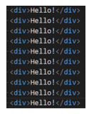

Домашнее задание к уроку 21
-
Задача 1.
Задача 1. Дано 10 рядків тексту «Hello!» у окремих div. При кліку на якийсь із них усі наступні повинні бути зафарбовані у червоний колір.
 -
Задача 2.
Задача 2. Дано 5 елементів input. При введенні значення у якийсь із них необхідно автоматично заповнювати інші (усі попередні у спадному порядку(кожен попередній має значення на 1 менше за наступний), усі наступні на 1 більше (кожен наступне на 1 більше за попереднього)

-
Задача 3.
Задача 3. Дано 5 випадковим чином згенерованих нумерованих списків з рандомними числами (кількість елементів у списку випадкова від 1 до 10, елементи випадкові – від 1 до 100). При натисненні на кнопку нумеровані списки з парною кількістю елементів зафарбувати у зелений колір, інші у червоний.
-
Задача 4.
Задача 4. Дано 3 таблиці розмірності 3*3 з випадковими числами. Якщо відбувається клік на якійсь із клітинок, то до відповідної таблиці додається червона рамка (спробуйте додати можливість відображення кількості кліків біля назви таблиці з використанням відповідно доданого для цього атрибута).
-
Задача 5.
Задача 5. На формі вводять 7 числових значень (вік, зріст, вага, заробітна плата, стаж, номер відділу, порядковий номер). Додати подію обробки події click на форму і якщо клік на input, то автоматично замінювати значення його на 0.
-
Задача 6.
Задача . Приклад. Дано перелік товарів у кошику. При зміні кількості одиниць товару збільшувати загальну вартість. Створити клас Product, що призначений для маніпуляцій товаром та клас ProductManager що оперує з усіма товарами (через подію передвати ідентифікатор товару та операцію, що зроблена)